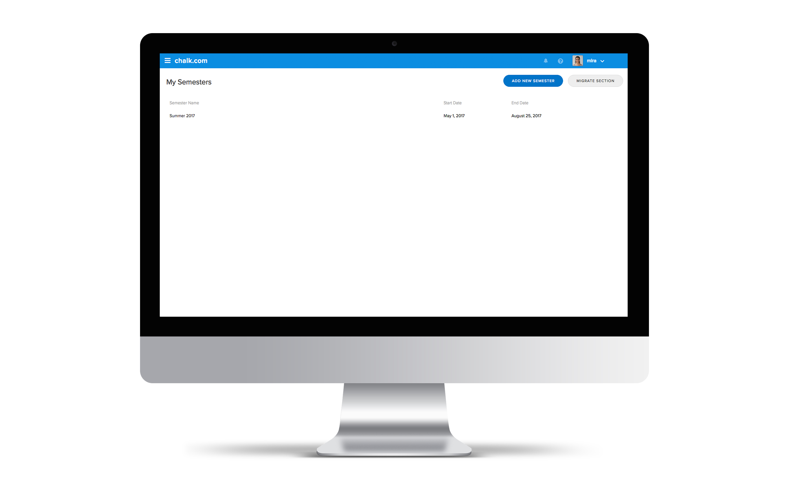
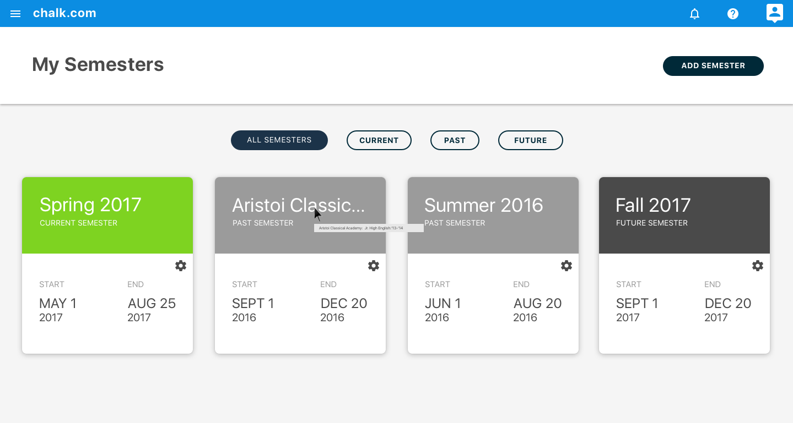
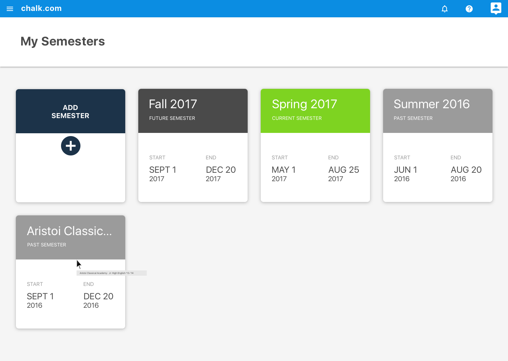
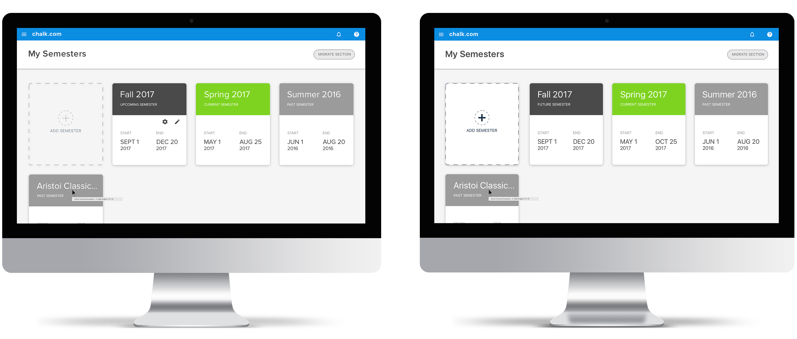

CONTEXT
Chalk.com’s Semesters Page is one the global settings pages used by all of the apps’ users.
Teachers visit this page in order to perform many semester related tasks that include things such as:
viewing semester overviews, creating new semesters, editing semester settings, deleting semesters and copying semester content.
PROBLEM
The state of Chalk.com’s Semesters page was
in need of a revamp.
- It listed all semesters in a basic table (90’s style - see below)
- The only action it provided was to create a new semester, remove a semester (less obviously), and to click on the semester to view details
- There was no way to edit the semesters from this page, or make any sort of edits like adding offdays/holidays for the semester duration
It was also a little
visually disconnected with the rest of the Chalk.com suite.

DESIGNING FOR THE USER
UI/UX Design Requirements:
- Teachers need to be able to remove a semester, edit a semester, and add a semester
- Connect visually and align with the rest of the pages and features on Chalk.com
- Be able to view semester details at a glance
INITIAL PROTOTYPE

After talking to existing users and careful consideration, below is a list of decisions made in order to better the overall experience:
- A card view was used in order to better organize the semesters and better connect this page with the rest of the Chalk.com suite
- Colours were used to differentiate the cards and make it easier for users to be able to quickly and at a glance recognize the
current, past, or, future semesters
- Filtering buttons were added so users can focus on the semesters of interest and not be distracted by the other semesters
CHALLENGES
One of the challenges that came up was figuring out the order in which the cards should be displayed. Some questions that came up were:
- Should the cards be in chronological order, displaying past, present, then future?
- Should the cards only display the current semester by default and then users would have to click the filtering options to switch?
To answer the following questions, more user research had to be performed.
The main goal was to find out why most users visited the Semesters Page in order to understand what users were most interested in seeing.
Another important piece of information was the number of semesters that most users had. The answer to this question can aid in
figuring out whether a filtering feature was even necessary.
PROTOTYPE 2

After going through a more rigorous user research and testing, the following things were noted:
- Most users have an average of 6 semesters in total. This meant that the filtering feature did not add much value since
there wasn’t an overwhelming amount of information.
- Most users visited ‘My Semesters’ in order to create a future semester. A lot of users were also using the page to edit current semesters.
For these reasons, the order in which the cards are displayed to the user is in the order of most interest.
Therefore, the cards will appear in the order of: future, present, then past.

Wow! Time really does fly when you’re having fun.
I’m afraid this project is over. But I've prepared a few more for you so there’s no need to panic!
BACK TO MY OTHER WORK!